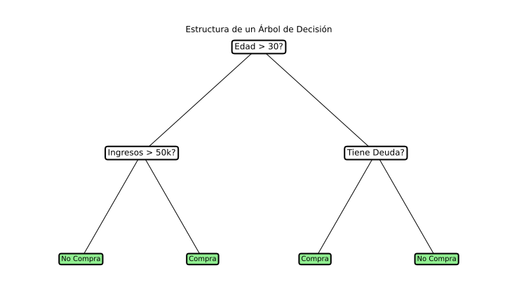

🤖 Unidad 4. Árbol de Decisión en Inteligencia Artificial: Explicación Detallada
El algoritmo de Árbol de Decisión (Decision Tree) es un modelo de aprendizaje supervisado que se utiliza tanto para problemas de clasificación como de regresión. Su objetivo es dividir el espacio de datos en subconjuntos homogéneos basándose en una serie de reglas, de modo que cada subconjunto sea lo más puro posible con respecto a la variable objetivo. Los árboles de decisión son fáciles de interpretar, muy útiles para entender las relaciones en los datos, y se aplican ampliamente en una variedad de campos.
A continuación, exploraremos la teoría detrás de los árboles de decisión, cómo se construyen, y daremos ejemplos que ilustran cómo funciona este algoritmo en la práctica. También incluiremos casos reales en los que este algoritmo ha demostrado ser útil, así como cómo encontrar los mejores valores para los metaparámetros del modelo.
1. Estructura de un Árbol de Decisión
Un árbol de decisión está compuesto por varios elementos fundamentales:
- Nodos de Decisión: Representan la división de los datos según una característica específica. Aquí se toma una decisión sobre qué atributo se usa para dividir el conjunto de datos.
- Ramas: Las conexiones entre nodos representan el resultado de una decisión. Cada rama lleva a un nuevo nodo o a un nodo hoja.
- Nodos Hoja: Son los puntos finales del árbol. Representan la categoría final o el valor predicho para una determinada observación.

Cada división en un árbol de decisión intenta dividir los datos de manera que maximice la pureza de los subconjuntos resultantes, es decir, que agrupe datos similares juntos. Este proceso continúa hasta que se cumplen ciertas condiciones, como alcanzar un número mínimo de muestras en un nodo o una profundidad máxima del árbol.
2. Criterios de División y Fórmulas Matemáticas
Los árboles de decisión se construyen utilizando una serie de divisiones, cada una de las cuales se elige basándose en un criterio que mide la calidad de la división. Existen varias métricas para seleccionar la característica que mejor divide los datos:
- Entropía e Índice de Ganancia de Información
- Índice Gini
2.1. Entropía e Índice de Ganancia de Información
La entropía mide la pureza de un nodo. Se define de la siguiente manera para un nodo que tiene dos clases (positiva y negativa):
Donde:
- \( p_+ \) y \( p_- \) son las proporciones de ejemplos positivos y negativos en el nodo.
El objetivo es minimizar la entropía en cada nodo, lo que equivale a hacer los nodos lo más homogéneos posible.
La ganancia de información mide la reducción de la entropía después de dividir un nodo. La fórmula para la ganancia de información (\( IG \)) es:
Donde:
- S es el conjunto de datos original.
- A es el atributo por el cual se está dividiendo.
- S_v son los subconjuntos de S resultantes de la división por el valor v de la característica A.
2.2. Índice Gini
El índice Gini es otra medida utilizada para evaluar la calidad de una división. Representa la probabilidad de que una observación seleccionada aleatoriamente sea clasificada incorrectamente si se realiza una predicción aleatoria basada en la distribución de clases del nodo. La fórmula para el índice Gini es:
Donde \( p_i \) es la proporción de elementos pertenecientes a la clase \( i \) en el conjunto \( S \), y \( C \) es el número de clases.
La idea detrás del índice Gini es minimizar el valor de \( Gini(S) \) en cada división, buscando nodos lo más puros posible.
2.3. Cálculo de Ejemplos con Entropía e Índice Gini
Veamos un ejemplo detallado de cómo calcular la entropía y el índice Gini para una división específica de datos.
Supongamos que tenemos un conjunto de datos con la siguiente distribución para la variable objetivo (Sí/No):
| Característica | Clase: Sí | Clase: No |
|---|---|---|
| A | 4 | 2 |
| B | 1 | 3 |
2.3.1. Cálculo de la Entropía
Primero calculamos la entropía para cada uno de los nodos resultantes de dividir el conjunto de datos según la característica "A":
Para A:
- Total de ejemplos: \( 4 + 2 = 6 \)
- Proporción de clase Sí \(( p_+ ): (\frac{4}{6})\)
- Proporción de clase No \(( p_- ): (\frac{2}{6})\)
La entropía para la característica A es: $$ H(A) = -\left( \frac{4}{6} \right) \log_2\left( \frac{4}{6} \right) - \left( \frac{2}{6} \right) \log_2\left( \frac{2}{6} \right) = 0.918 $$
Para B:
- Total de ejemplos: \( 1 + 3 = 4 \)
- Proporción de clase Sí \(( p_+ ): (\frac{1}{4})\)
- Proporción de clase No \(( p_+ ): (\frac{3}{4})\)
La entropía para la característica B es: $$ H(B) = -\left( \frac{1}{4} \right) \log_2\left( \frac{1}{4} \right) - \left( \frac{3}{4} \right) \log_2\left( \frac{3}{4} \right) = 0.811 $$
2.3.2. Cálculo del Índice Gini
Ahora calculamos el índice Gini para la misma división:
Para A:
- Proporción de clase Sí \(( p_+ ): (\frac{4}{6})\)
- Proporción de clase No \(( p_- ): (\frac{2}{6})\)
El índice Gini para la característica A es: $$ Gini(A) = 1 - \left( \frac{4}{6} \right)^2 - \left( \frac{2}{6} \right)^2 = 0.444 $$
Para B:
- Proporción de clase Sí \(( p_+ ): (\frac{1}{4})\)
- Proporción de clase No \(( p_+ ): (\frac{3}{4})\)
El índice Gini para la característica B es: $$ Gini(B) = 1 - \left( \frac{1}{4} \right)^2 - \left( \frac{3}{4} \right)^2 = 0.375 $$
Con estos valores, podemos comparar las características y elegir cuál proporciona una mejor división de los datos según el criterio seleccionado (en este caso, el que minimice la entropía o el índice Gini).
Ejemplo en Python: Cálculo de Entropía y Gini
import numpy as np
from scipy.stats import entropy
def calcular_entropia(clases):
"""Calcula la entropía de un conjunto de clases"""
total = len(clases)
if total == 0:
return 0
# Contar cada clase
valores, cuentas = np.unique(clases, return_counts=True)
probabilidades = cuentas / total
# Calcular entropía: -sum(p * log2(p))
entropia = -np.sum(probabilidades * np.log2(probabilidades))
return entropia
def calcular_gini(clases):
"""Calcula el índice Gini de un conjunto de clases"""
total = len(clases)
if total == 0:
return 0
# Contar cada clase
valores, cuentas = np.unique(clases, return_counts=True)
probabilidades = cuentas / total
# Calcular Gini: 1 - sum(p^2)
gini = 1 - np.sum(probabilidades ** 2)
return gini
# Ejemplo con los datos de la tabla
caracteristica_A = ['Sí', 'Sí', 'Sí', 'Sí', 'No', 'No'] # 4 Sí, 2 No
caracteristica_B = ['Sí', 'No', 'No', 'No'] # 1 Sí, 3 No
print("Cálculos para Característica A:")
entropia_A = calcular_entropia(caracteristica_A)
gini_A = calcular_gini(caracteristica_A)
print(f" Entropía: {entropia_A:.4f}")
print(f" Índice Gini: {gini_A:.4f}")
print("\nCálculos para Característica B:")
entropia_B = calcular_entropia(caracteristica_B)
gini_B = calcular_gini(caracteristica_B)
print(f" Entropía: {entropia_B:.4f}")
print(f" Índice Gini: {gini_B:.4f}")
# Interpretación
print("\nInterpretación:")
if gini_A < gini_B:
print(f"La característica A es mejor (Gini más bajo: {gini_A:.4f} < {gini_B:.4f})")
else:
print(f"La característica B es mejor (Gini más bajo: {gini_B:.4f} < {gini_A:.4f})")
3. Construcción de un Árbol de Decisión
La construcción de un árbol de decisión se realiza de manera recursiva, siguiendo estos pasos:
- Seleccionar el Mejor Atributo: Se elige el atributo que maximiza la ganancia de información o minimiza el índice Gini.
- Dividir el Conjunto de Datos: Se divide el conjunto de datos en función del atributo seleccionado.
- Repetir el Proceso: Se repiten los pasos anteriores para cada subconjunto resultante hasta alcanzar un criterio de parada.
Criterios de Parada pueden ser, por ejemplo, que todos los datos del nodo sean de la misma clase, que el nodo contenga muy pocas instancias (por debajo de un umbral mínimo), o que se haya alcanzado una profundidad máxima predefinida.
Ejemplo en Python: Construcción de Árbol de Decisión
from sklearn.tree import DecisionTreeClassifier, plot_tree
from sklearn.datasets import load_iris
from sklearn.model_selection import train_test_split
from sklearn.metrics import accuracy_score, classification_report
import matplotlib.pyplot as plt
import numpy as np
# Cargar datos
iris = load_iris()
X, y = iris.data, iris.target
# Dividir datos
X_train, X_test, y_train, y_test = train_test_split(X, y, test_size=0.2, random_state=42)
# Crear árboles con diferentes criterios
tree_gini = DecisionTreeClassifier(criterion='gini', max_depth=3, random_state=42)
tree_entropy = DecisionTreeClassifier(criterion='entropy', max_depth=3, random_state=42)
# Entrenar ambos modelos
tree_gini.fit(X_train, y_train)
tree_entropy.fit(X_train, y_train)
# Predicciones
y_pred_gini = tree_gini.predict(X_test)
y_pred_entropy = tree_entropy.predict(X_test)
# Evaluación
print("\u00c1rbol con criterio Gini:")
print(f" Accuracy: {accuracy_score(y_test, y_pred_gini):.4f}")
print("\n\u00c1rbol con criterio Entropía:")
print(f" Accuracy: {accuracy_score(y_test, y_pred_entropy):.4f}")
# Visualizar ambos árboles
fig, axes = plt.subplots(2, 1, figsize=(20, 20))
# Árbol con Gini
plot_tree(tree_gini,
feature_names=iris.feature_names,
class_names=iris.target_names,
filled=True,
rounded=True,
fontsize=10,
ax=axes[0])
axes[0].set_title('Árbol de Decisión - Criterio: Gini', fontsize=16, fontweight='bold')
# Árbol con Entropía
plot_tree(tree_entropy,
feature_names=iris.feature_names,
class_names=iris.target_names,
filled=True,
rounded=True,
fontsize=10,
ax=axes[1])
axes[1].set_title('Árbol de Decisión - Criterio: Entropía', fontsize=16, fontweight='bold')
plt.tight_layout()
plt.savefig('arboles_decision_comparacion.png', dpi=150, bbox_inches='tight')
plt.show()
# Información sobre la importancia de características
print("\nImportancia de Características (Gini):")
for nombre, importancia in zip(iris.feature_names, tree_gini.feature_importances_):
print(f" {nombre}: {importancia:.4f}")
4. Ejemplo de Árbol de Decisión
Supongamos que queremos predecir si una persona hará ejercicio al aire libre en función de dos variables: tiempo (soleado, nublado, lluvioso) y temperatura (alta, baja).
- Raíz del Árbol: Elegimos la primera división. Si utilizamos la ganancia de información, tal vez encontremos que la variable tiempo tiene la mayor ganancia.
- Nodo Raíz: Tiempo
-
Ramas: Soleado, Nublado, Lluvioso
-
Divisiones Subsiguientes: Para cada valor del tiempo, examinamos la temperatura.
-
Para tiempo = Soleado, podemos tener otra división por temperatura.
-
Nodos Hoja: Al final de las ramas, llegamos a los nodos hoja, que pueden ser "Sí" o "No" indicando si la persona hará ejercicio o no.
5. Ventajas y Limitaciones de los Árboles de Decisión
- Ventajas:
- Fácil Interpretación: Los árboles de decisión son fáciles de interpretar, ya que se asemejan a cómo los humanos toman decisiones.
- Pocos Supuestos sobre los Datos: No necesitan normalización de datos ni que las características sean escaladas.
-
Manejo de Datos Categóricos y Numéricos: Los árboles de decisión pueden trabajar con ambos tipos de datos.
-
Limitaciones:
- Sobreajuste: Los árboles de decisión tienden a sobreajustarse si no se limitan adecuadamente (por ejemplo, estableciendo una profundidad máxima).
- Inestabilidad: Los árboles de decisión son sensibles a pequeñas variaciones en los datos, lo cual puede generar árboles diferentes para conjuntos de datos similares.
6. Optimización de los Metaparámetros
La calidad de un árbol de decisión depende en gran medida de los metaparámetros que se elijan. Algunos de los metaparámetros clave para un árbol de decisión son:
-
Profundidad Máxima (
max_depth): Limitar la profundidad del árbol ayuda a evitar el sobreajuste. La profundidad máxima determina cuántos niveles puede tener el árbol. Una profundidad muy alta puede llevar al sobreajuste, mientras que una profundidad muy baja puede causar un subajuste. -
Número Mínimo de Muestras por Hoja (
min_samples_leaf): Controla el número mínimo de muestras que debe haber en un nodo hoja. Un valor más alto reduce el sobreajuste, ya que asegura que las hojas tengan un número significativo de ejemplos. -
Número Mínimo de Muestras para Dividir (
min_samples_split): Especifica el número mínimo de muestras requerido para dividir un nodo. Un valor más alto evita divisiones innecesarias, lo cual ayuda a mantener el árbol más simple y reducir el riesgo de sobreajuste. -
Criterio de División (
criterion): Define la función que se usa para medir la calidad de una división. Los criterios comunes songinieentropy. La elección del criterio puede influir en la estructura del árbol y su capacidad de generalización.
Búsqueda de los Mejores Valores de los Metaparámetros
Para encontrar los valores óptimos de estos metaparámetros, se suelen usar técnicas como la búsqueda en cuadrícula (Grid Search) o la búsqueda aleatoria (Random Search), combinadas con la validación cruzada.
-
Grid Search: Busca de manera exhaustiva entre una lista predefinida de valores para cada metaparámetro. Es eficaz pero puede ser computacionalmente costosa si hay muchos parámetros y valores posibles.
-
Random Search: Busca valores de metaparámetros de manera aleatoria dentro de un rango definido. Es más eficiente que Grid Search cuando se trabaja con un gran número de combinaciones posibles.
-
Validación Cruzada: Tanto en Grid Search como en Random Search, se utiliza validación cruzada para evaluar el rendimiento del modelo para cada combinación de metaparámetros y seleccionar aquella que maximice la métrica de rendimiento, como la precisión o el F1-score.
Ejemplo en Python: Optimización de Hiperparámetros
from sklearn.tree import DecisionTreeClassifier
from sklearn.model_selection import GridSearchCV, RandomizedSearchCV
from sklearn.datasets import load_breast_cancer
from sklearn.model_selection import train_test_split
from sklearn.metrics import classification_report, confusion_matrix
import numpy as np
import matplotlib.pyplot as plt
# Cargar datos
data = load_breast_cancer()
X, y = data.data, data.target
X_train, X_test, y_train, y_test = train_test_split(X, y, test_size=0.2, random_state=42)
print("=== GRID SEARCH ===")
# Definir espacio de búsqueda
param_grid = {
'criterion': ['gini', 'entropy'],
'max_depth': [3, 5, 7, 10, None],
'min_samples_split': [2, 5, 10],
'min_samples_leaf': [1, 2, 4],
'max_features': ['sqrt', 'log2', None]
}
# Grid Search con validación cruzada
grid_search = GridSearchCV(
DecisionTreeClassifier(random_state=42),
param_grid,
cv=5,
scoring='accuracy',
n_jobs=-1,
verbose=1
)
grid_search.fit(X_train, y_train)
print(f"\nMejores parámetros: {grid_search.best_params_}")
print(f"Mejor score (CV): {grid_search.best_score_:.4f}")
# Evaluar en test
y_pred_grid = grid_search.best_estimator_.predict(X_test)
print(f"Accuracy en test: {accuracy_score(y_test, y_pred_grid):.4f}")
print("\n=== RANDOM SEARCH ===")
# Definir distribuciones para Random Search
param_dist = {
'criterion': ['gini', 'entropy'],
'max_depth': [3, 5, 7, 10, 15, 20, None],
'min_samples_split': np.arange(2, 20),
'min_samples_leaf': np.arange(1, 10),
'max_features': ['sqrt', 'log2', None]
}
# Random Search
random_search = RandomizedSearchCV(
DecisionTreeClassifier(random_state=42),
param_dist,
n_iter=50, # Número de combinaciones a probar
cv=5,
scoring='accuracy',
n_jobs=-1,
random_state=42,
verbose=1
)
random_search.fit(X_train, y_train)
print(f"\nMejores parámetros: {random_search.best_params_}")
print(f"Mejor score (CV): {random_search.best_score_:.4f}")
# Evaluar en test
y_pred_random = random_search.best_estimator_.predict(X_test)
print(f"Accuracy en test: {accuracy_score(y_test, y_pred_random):.4f}")
# Visualizar efecto de max_depth
max_depths = range(1, 21)
train_scores = []
test_scores = []
for depth in max_depths:
tree = DecisionTreeClassifier(max_depth=depth, random_state=42)
tree.fit(X_train, y_train)
train_scores.append(tree.score(X_train, y_train))
test_scores.append(tree.score(X_test, y_test))
plt.figure(figsize=(10, 6))
plt.plot(max_depths, train_scores, label='Train Accuracy', marker='o')
plt.plot(max_depths, test_scores, label='Test Accuracy', marker='s')
plt.xlabel('Max Depth')
plt.ylabel('Accuracy')
plt.title('Efecto de max_depth en el Rendimiento')
plt.legend()
plt.grid(True, alpha=0.3)
plt.axvline(x=grid_search.best_params_['max_depth'], color='red',
linestyle='--', alpha=0.7, label='Mejor max_depth (Grid Search)')
plt.show()
7. Aplicaciones Reales de los Árboles de Decisión
Los árboles de decisión se aplican en una amplia gama de problemas reales debido a su versatilidad y facilidad de interpretación. Algunos ejemplos son:
-
Diagnóstico Médico: En la medicina, los árboles de decisión se utilizan para ayudar a los médicos a diagnosticar enfermedades basándose en síntomas y pruebas de laboratorio. Por ejemplo, un árbol de decisión puede ayudar a predecir si un paciente tiene diabetes en función de características como nivel de glucosa, presión arterial y edad.
-
Crédito y Riesgo Financiero: En el sector financiero, los árboles de decisión se usan para evaluar la probabilidad de que un cliente incumpla un préstamo. Las características utilizadas pueden incluir el historial crediticio, los ingresos mensuales y el monto del préstamo solicitado.
-
Márketing y Segmentación de Clientes: En el marketing, los árboles de decisión ayudan a segmentar a los clientes y a predecir si un cliente potencial realizará una compra. Los datos analizados pueden incluir el historial de compras, la interacción con campañas publicitarias y la demografía del cliente.
-
Control de Calidad en Manufactura: En el sector manufacturero, los árboles de decisión pueden ayudar a detectar productos defectuosos durante el proceso de producción, basándose en características como la temperatura, el tiempo de producción, y otras métricas de calidad.
-
Predicción de Deserción Escolar: En educación, los árboles de decisión se usan para predecir la probabilidad de que un estudiante abandone sus estudios, basándose en factores como la asistencia, las calificaciones y el apoyo familiar.
-
Clasificación de Especies: En la biología, se utilizan para clasificar especies de plantas o animales según características observadas. Un ejemplo clásico es el conjunto de datos Iris, donde se clasifica una flor en una de tres especies según el largo y ancho de los pétalos y sépalos.
8. Conclusión
Los árboles de decisión son una herramienta fundamental en el aprendizaje automático debido a su capacidad para dividir los datos de manera iterativa y sencilla, maximizando la pureza de los nodos en cada división. Aunque presentan ciertas limitaciones, como el riesgo de sobreajuste, son particularmente valiosos cuando se necesita una explicación clara y comprensible del proceso de decisión. Los árboles de decisión se utilizan ampliamente en muchos sectores, y sus aplicaciones van desde el diagnóstico médico hasta la predicción del comportamiento de los clientes. Son una excelente elección cuando la interpretabilidad y la facilidad de uso son factores importantes a considerar.